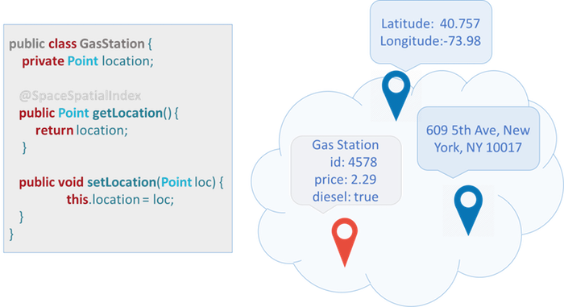
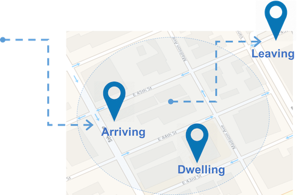

Spatial queries make use of geometry data types such as points, circles and polygons and these queries consider the spatial relationship between these geometries.
Spatial queries can be used with any space operation which supports SQL queries (read, readMultiple, take, etc.).
Dependencies
In order to use this feature, include the
<dependency>
<groupId>org.gigaspaces</groupId>
<artifactId>xap-spatial</artifactId>
<version>[%=Versions.maven-version-MX%]</version>
</dependency>
For more information on dependencies, see Maven Artifacts.
Suppose we want to write an application to locate nearby gas stations. First, we create a GasStation class which includes the location and address of the gas station:

And here is the corresponding java class:
import org.openspaces.spatial.shapes.Point;
import com.gigaspaces.annotation.pojo.SpaceClass;
import com.gigaspaces.annotation.pojo.SpaceId;
@SpaceClass
public class GasStation {
private Long id;
private Point location;
public Point getLocation() {
return location;
}
public void setLocation(Point location) {
this.location = location;
}
@SpaceId
public Long getId() {
return id;
}
public void setId(Long id) {
this.id = id;
}
}
Let's write some gas stations into the Space:
GigaSpace gigaSpace = new GigaSpaceConfigurer(new EmbeddedSpaceConfigurer("geoSpace")).gigaSpace();
GasStation gs = new GasStation();
gs.setId(new Long(1));
gs.setLocation(ShapeFactory.point(10.0d, 10.0d));
gigaSpace.write(gs);
Next, we can query for a gas station within a certain radius of our location:
Point p = ShapeFactory.point(7.5d, 7.5d);
SQLQuery<GasStation> query = new SQLQuery<GasStation>(GasStation.class, "location spatial:within ?")
.setParameter(1, ShapeFactory.circle(p, 4.5d));
GasStation station = gigaSpace.read(query);
if (station != null) {
System.out.println("Found a GasStation :" + station);
}
}
All shapes are located in the org.openspaces.spatial.shapes package.
| Shape | Description |
|---|---|
| Point | A point, denoted by X and Y coordinates. |
| LineString | A finite sequence of one or more consecutive line segments. |
| Circle | A circle, denoted by a point and a radius. |
| Rectangle | A rectangle aligned with the axis (for non-aligned rectangles use Polygon). |
| Polygon | A finite sequence of consecutive line segments which denotes a bounded area. |
To create a shape, use the ShapeFactory class.
Example:
import static org.openspaces.spatial.ShapeFactory.circle;
import static org.openspaces.spatial.ShapeFactory.lineString;
import static org.openspaces.spatial.ShapeFactory.point;
import static org.openspaces.spatial.ShapeFactory.rectangle;
import static org.openspaces.spatial.ShapeFactory.polygon;
Point point = ShapeFactory.point(1, 2);
You can also use static import to simplify shape creation.
Example:
import static org.openspaces.spatial.ShapeFactory.circle;
import static org.openspaces.spatial.ShapeFactory.lineString;
import static org.openspaces.spatial.ShapeFactory.point;
import static org.openspaces.spatial.ShapeFactory.rectangle;
import static org.openspaces.spatial.ShapeFactory.polygon;
import org.openspaces.spatial.shapes.Circle;
import org.openspaces.spatial.shapes.LineString;
import org.openspaces.spatial.shapes.Point;
import org.openspaces.spatial.shapes.Polygon;
import org.openspaces.spatial.shapes.Rectangle;
...
Point point = point(10d, 10d);
LineString line = lineString(point(10, 20), point(22, 33));
Circle circle = circle(point(12.0d, 10.0d), 5.0d);
Rectangle rectangle = rectangle(-10d, -10d, 10d, 10d);
Polygon polygon = polygon(point(-10,10), point(0, 10), point(10,-10));
Spatial queries are available through the spatial: extension to the SQL query syntax. The following operations are supported:
| Query | Description |
|---|---|
| shape1 spatial:intersects shape2 | The intersection between shape1 and shape 2 is not empty (i.e. some or all of shape1 overlaps some or all of shape2). |
| shape1 spatial:within shape2 | shape1 is within (contained in) shape2, boundaries inclusive. |
| shape1 spatial:contains shape2 | shape1 contains shape2, boundaries inclusive. |
The intersection between shape1 and shape2 is not empty, some or all of shape1 overlaps some or all of shape2.
In our example we write first a CircleProperty object into the Space. Then we create other shapes and see if theses shapes intersect with the stored CircleProperty in the Space.
import org.openspaces.spatial.shapes.Circle;
import com.gigaspaces.annotation.pojo.SpaceClass;
import com.gigaspaces.annotation.pojo.SpaceId;
@SpaceClass
public class CircleProperty {
private Long id;
private Circle boundery;
public Circle getBoundery() {
return boundery;
}
public void setBoundery(Circle boundery) {
this.boundery = boundery;
}
@SpaceId
public Long getId() {
return id;
}
public void setId(Long id) {
this.id = id;
}
}
public void init() {
gigaSpace = new GigaSpaceConfigurer(new EmbeddedSpaceConfigurer("geoSpace")).gigaSpace();
CircleProperty c1 = new CircleProperty();
c1.setId(1L);
c1.setBoundery(ShapeFactory.circle(point(0.0d, 0.0d), 10.0d));
gigaSpace.write(c1);
}
public void testIntersect() {
LineString lineString = lineString(point(20, -10), point(20, 5),point(0,5),point(0,20) );
SQLQuery<CircleProperty> query = new SQLQuery<CircleProperty>(CircleProperty.class,
"boundery spatial:intersects ?").setParameter(1, lineString);
CircleProperty property = gigaSpace.read(query);
if (property != null) {
System.out.println("LineString intersetcs :" + property.getId());
}
Circle circle = circle(point(20.0d, 0.0d), 10.0d);
query = new SQLQuery<CircleProperty>(CircleProperty.class, "boundery spatial:intersects ?").setParameter(1,
circle);
property = gigaSpace.read(query);
if (property != null) {
System.out.println("Circle intersetcs :" + property.getId());
}
Rectangle rectangle = rectangle(-10,-5, -10, 5);
query = new SQLQuery<CircleProperty>(CircleProperty.class, "boundery spatial:intersects ?").setParameter(1,
rectangle);
property = gigaSpace.read(query);
if (property != null) {
System.out.println("Rectangle intersetcs :" + property.getId());
}
Collection<Point> points = new ArrayList<>();
points.add(point(10,10));
points.add(point(15,5));
points.add(point(15,-5));
points.add(point(10,-10));
points.add(point(5,-5));
points.add(point(5,5));
Polygon polygon= polygon(points);
query = new SQLQuery<CircleProperty>(CircleProperty.class, "boundery spatial:intersects ?").setParameter(1,
polygon);
property = gigaSpace.read(query);
if (property != null) {
System.out.println("Polygon intersetcs :" + property.getId());
}
}
Shape1 is contained within shape2 including its boundaries.
In our example we write first a CircleProperty and a LineProperty object into the Space. Notice that both space classes are subclasses of AbstractProperty.
import org.openspaces.spatial.shapes.Shape;
import com.gigaspaces.annotation.pojo.SpaceId;
public abstract class AbstractProperty {
private Long id;
private Shape boundery;
public Shape getBoundery() {
return boundery;
}
public void setBoundery(Shape boundery) {
this.boundery = boundery;
}
@SpaceId
public Long getId() {
return id;
}
public void setId(Long id) {
this.id = id;
}
}
import com.gigaspaces.annotation.pojo.SpaceClass;
@SpaceClass
public class CircleProperty extends AbstractProperty{
}
import com.gigaspaces.annotation.pojo.SpaceClass;
@SpaceClass
public class LineProperty extends AbstractProperty {
}
public void init() {
gigaSpace = new GigaSpaceConfigurer(new EmbeddedSpaceConfigurer("geoSpace")).gigaSpace();
CircleProperty c1 = new CircleProperty();
c1.setId(1L);
c1.setBoundery(ShapeFactory.circle(point(0.0d, 0.0d), 10.0d));
gigaSpace.write(c1);
LineProperty l1 = new LineProperty();
l1.setId(2L);
l1.setBoundery(ShapeFactory.lineString(point(-5.0d, -5.0d), point(5d, 5d)));
gigaSpace.write(l1);
}
Will use a spatial query to find the shapes stored in the Space that are within a circle:
public void testWithin() {
Circle circle = circle(point(-0.0d, 0.0d), 15.0d);
SQLQuery<AbstractProperty> query = new SQLQuery<AbstractProperty>(AbstractProperty.class, "boundery spatial:within ?")
.setParameter(1, circle);
AbstractProperty[] property = gigaSpace.readMultiple(query);
if (property != null) {
for (int i = 0; i < property.length; i++) {
System.out.println("Property :" + property[i].getId()+ " within Circle");
}
}
}
Geofencing allows automatic alerts to be generated based on the defined coordinates of a geographic area.

GasStation appears within a certain radius of my location.
Point location = ShapeFactory.point(0, 0);
double radius = 5.0d;
SQLQuery<GasStation> query = new SQLQuery(GasStation.class, "location spatial:within ?")
.setParameter(1, ShapeFactory.circle(location, radius));
SimpleNotifyEventListenerContainer eventContainer = new SimpleNotifyContainerConfigurer(gigaSpace)
.template(query)
.eventListenerAnnotation(new Object() {
@SpaceDataEvent
public void eventHappened(GasStation gasStation) {
System.out.println("Got " + gasStation);
}
}).notifyContainer();
The ShapeFactory also supports parsing WKT.
| Shape | Description |
|---|---|
| Point | POINT (0 0) |
| Envelope | ENVELOPE (1.0, 2.0, 4.0, 3.0) |
| Rectangle | LINESTRING(30 10, 40 10, 40 20, 30 20, 30 10) |
| Polygon | POLYGON (0.0 0.0, 0.0 5.0, 2.5 2.5, 5.0 5.0, 5.0 0.0, 0.0 0.0) |
| Buffer | BUFFER (POINT (0.0 0.0), 5.0)) |
For example:
Shape s2 = ShapeFactory.parse("POINT (1.0 2.0)",ShapeFormat.WKT);
Shape s3 = ShapeFactory.parse("ENVELOPE (1.0, 2.0, 4.0, 3.0)",ShapeFormat.WKT);
Shape s4 = ShapeFactory.parse("LINESTRING (1.0 11.0, 2.0 12.0, 3.0 13.0)",ShapeFormat.WKT);
Shape s5 = ShapeFactory.parse("POLYGON ((0.0 0.0, 0.0 5.0, 2.5 2.5, 5.0 5.0, 5.0 0.0, 0.0 0.0))",ShapeFormat.WKT);
Shape s6 = ShapeFactory.parse("BUFFER (POINT (0.0 0.0), 5.0)",ShapeFormat.WKT);
The ShapeFactory also supports parsing GeoJson strings into shapes. For example:
Examples:
ShapeFactory.parse("{\"type\":\"Point\",\"coordinates\":[1.0,2.0]}", ShapeFormat.GEOJSON);
ShapeFactory.parse("{\"type\":\"Polygon\",\"coordinates\": [[[1.0,3.0],[1.0,4.0],[2.0,4.0],[2.0,3.0],[1.0,3.0]]]}",
ShapeFormat.GEOJSON);
ShapeFactory.parse("{\"type\":\"LineString\",\"coordinates\":[[1.0,11.0],[2.0,12.0],[3.0,13.0]]}",
ShapeFormat.GEOJSON);
ShapeFactory.parse("{\"type\":\"Polygon\",\"coordinates\":[[[0.0,0.0],[0.0,5.0],[5.0,0.0],[0.0,0.0]]]}",
ShapeFormat.GEOJSON);
ShapeFactory.parse("{\"type\":\"Polygon\",\"coordinates\":[[[0.0,0.0],[0.0,5.0],[2.5,2.5],[5.0,5.0],[5.0,0.0],[0.0,0.0]]]}",
ShapeFormat.GEOJSON);
ShapeFactory.parse("{\"type\":\"Circle\",\"coordinates\":[0.0,0.0],\"radius\":5.0}", ShapeFormat.GEOJSON);
Lucene indexing is stored in a Store Directory. Lucene supports different Store Directory implementations, but recommends using the MMapDirectory, which is what
Lucene indexes are stored in the file system. When used within a processing unit deployed on the service grid, these files are stored within the processing unit working folder, and automatically deleted if/when the processing unit is undeployed. When there's no service grid involved, the files are stored in a unique folder under user.home. This location can be explicitly set using the space-config.spatial.lucene.storage.location space property.
The performance of Geospatial queries can be vastly improved by indexing shape properties. For detailed information, see the Geospatial Index topic in the Indexing section.